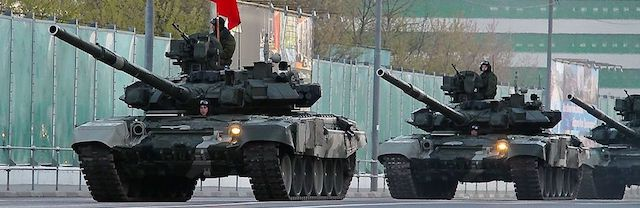

2018-09-01 08:00

Diana Johnstone’s 2016 book Queen of Chaos: The Misadventures of Hillary Clinton is not an election year hit piece like Dinesh D’Souza’s “Hillary’s America.” It is not a book about Hillary’s character flaws or her political flip-flopping. It is a book about foreign policy. More importantly, it is a book that deals with Clinton’s metamorphosis into a war hawk within an already hawkish Democratic Party, and the Democratic Party’s embrace of military aggression within the wider arc of the Cold War and Realpolitik. In 2018, as Russiagate consumes the minds of Centrist Democrats nostalgic for John McCain’s brand of militarism and American Exceptionalism, it’s an important book to revisit.
Johnstone begins with the U.S.-approved, if not engineered, coup which deposed Honduran President Manuel Zalaya. We immediately get a sense of how Hillary Clinton operates, her back-channel deals with old Cold War warriors who supported the Contras, friends in the Honduran military trained at the School of the Americas, and her stonewalling on returning Zalaya to power, even as half of Central and Latin America refused to recognize the eventual “winners” of the putsch.
Johnstone takes the reader through the beginnings of neoconservatism, originating in NSC-68, a 1968 Cold War document that still influences the foreign policy of Republicans and Democrats. She spends some time on the Israeli-American lobbyists who have hijacked American foreign policy and focused it on destroying the Middle East in order to “save” Israel – the only nation in the region to actually possess nuclear weapons. Johnstone goes on to examine the history of American foreign policy, particularly as driven by an interesting rogue’s gallery of female war hawks: Madeline Albright, Hillary Clinton, Susan Rice, Victoria Nuland, and Samantha Power, all Democrats.
Describing Clinton’s disconnect from feminism, Johnstone writes at length about the strange cases of PussyRiot and Femen, whose antics were used to full advantage by Clinton and the American media to attack Vladimir Putin and present their actions as “exercises in democracy” while their inevitable arrests were presented as an assault on civil liberties. Though we recoil from the Russian expression for disorderly conduct – “hooliganism” – we have no such compunctions about pepper-spraying and handcuffing peaceful demonstrators here at home. Johnstone also notes the right-wing Ukrainian connections to both groups as well as the co-optation of Amnesty International in serving the State Department.
Two chapters of Johnstone’s book deal with how NATO was expanded in violation of agreements with the former Soviet Union, and on the war that Bill Clinton waged in Yugoslavia. The war was sold as a “humanitarian intervention” to prevent genocide, which set the stage for future expansions of NATO and for more “humanitarian” wars. This particular war, as you may recall, resulted in the dissolution of Yugoslavia into pieces aligned with the West and a Slavic chunk aligned with Russia. Johnstone describes the process by which the West demonized Serbia’s leaders, applied sanctions, supported local proxies, sabotaged international diplomacy, cynically used international courts (which the US refuses to be bound by itself) to prosecute parties it didn’t like, manipulated the media, and bombed the hell out of its enemies. Bill Clinton’s Secretary of State, Madeline Albright, rejected diplomacy while telling reporters, “We intentionally set the bar too high for the Serbs to comply. They need some bombing, and that’s what they are going to get.” This is the same Albright who thought killing half a million Iraqi children through sanctions on medicines was “worth it” to get Iraq to rid itself of imaginary WMD’s.
Then we fast forward into Hillary Clinton’s tenure as Secretary of State, with her own war in Libya. Though her Republican adversaries shamefully exploited the loss of four lives in Benghazi, Clinton herself made a joke about the sodomization and murder of its leader and the transformation of an entire country into a failed state. Clinton famously mocked Obama’s dictum: “don’t do stupid shit,” claiming the United States needed a more sophisticated organizing principle. But “stupid shit” is precisely what Clinton did. She wrecked Libya.
In a long — and today a particularly relevant — chapter entitled “Not Understanding Russia” Johnstone makes the case that Clinton was armed only with an ancient Cold War mindset. Not that much has changed since NSC-68. Russia is still Reagan’s Evil Empire, and Putin is Stalin. “Soviet aggression” has been replaced with “Russian aggression” and NATO must be expanded to envelop Russia. Meanwhile, Poland and the Ukraine have developed strong fascist tendencies, which the United States either ignores or encourages (think Manafort), and Russia’s seizure of Crimea (which had been a gift to Ukraine in the first place) is portrayed in the press like Hitler’s Drang nach Osten. Where Bush expressed an amusing appreciation for Putin’s “soul” Clinton took a harsher view: “he was a KGB agent, by definition he doesn’t have a soul.” Under Secretary Clinton, the United States spent millions on Kremlinologists who, at one point, were trying to analyze Putin’s cowboy gait to see if he had Asperger’s Syndrome.
In June of 2016, the United States led the rest of NATO in war games in Poland, now governed by a far-right administration. In “Operation Anakonda 2016” 31,000 troops from 24 countries practiced for a Soviet and Warsaw Pact invasion. The commander of U.S. Army Europe, Gen. Ben Hodges, explained what the games were all about: “History shows that Russians only respect strength,” he told NPR.
In 1997 former Carter administration advisor Zbigniew Brzezinski (and midwife to Al Qaeda) joined Henry Kissinger as one more anti-Russian ideologue dispensing not only anti-Soviet “tough love” but developing a strategy for American domination and hardening of its superpower status in his book “The Grand Chessboard: American Primacy and its Geostratic Imperatives.” Brzezinski, whose son Ian was involved in the Ukrainian “Orange revolution,” has a low opinion of democracy, of the intelligence of citizens, of privacy, and of Europe or Asia or the Middle East. It is all a vast field to be plowed by Americans. Only after remaking the new world in the American image can there be peace. “But in the meantime it is imperative that no Eurasian challenger emerges, capable of dominating Eurasia and thus also of challenging America.” Russia is therefore as much an enemy as Iran or ISIS. A reviewer in “Foreign Affairs,” David C. Hendrickson, warned in 1997 that the anti-Russian prescriptions in Brzezinski’s book were so severe that even a democratic Russia would resist them and there would be unpredictable blow-back.
The United States was looking for ways to mire the Soviets in their own Viet Nam. Afghanistan was the stroke of evil genius emanating from Zbigniew Brzezinski’s twisted mind. In the last days of the Carter Administration Brzezinski recognized that Central Asia was the “soft underbelly” of the Russian bear, a source of conflict that, if exploited, could destabilize Moscow and mire it in war. Brzezinski was no Israel hawk like the neoconservatives. His goal was not to merge US and Israeli interests but to weaken the Soviets. But they shared many goals: a unipolar world, massive increases in the U.S. military, nuclear hegemony, regime change, punishing enemies, rewarding friends.
By rewarding our Islamist friends who opposed the Soviet Union in the 80’s and 90’s, the United States actually created terrorists like bin Laden, who at one point was on both U.S. and Saudi payrolls. The antagonism between the United States and Russia became so great that when Russia tried to warn the U.S. of the elder Tsarnaev brother its help was ignored. Putin brokered the surrender of Syria’s last remaining chemical weapons, but it was an unappreciated gesture because it delayed a U.S. attack on Syria. And when Putin took to the editorial pages of the New York Times to explain why the West must exercise caution in Syria, that Assad was also fighting terrorists, the United States paid him back by threatening the Russian-Ukrainian trade pact and building up NATO even more. The U.S. feigned shock when, faced with uncertain southern naval access, Russia took back the gift Khrushchev had given to the Ukraine in 1954 – Crimea, a peninsula the size of Maryland.
Johnstone concludes her book with “The War Party” — amoral neoliberals neither strictly Republicans nor strictly Democrat, but technocrats with political ambitions and wealthy friends from America’s many defense industries. From philanthropists who give money to Islamophobia, to think tanks, PAC donors, owners of the “free” press, opinion-shapers, oligarchs and despots. How is it, Johnstone asks, that Clinton and her ilk can curry favor of the Saudi family, Egyptian military dictators, Wall Street, Nigerian dictators, the Israeli occupation, and Ukrainian fascists? And what about all those wars? It’s bi-partisan. It’s just business.
Johnstone suggests that wars are nothing we need worry our pretty little heads over. Leave wars to the true professionals — contractors, mercenaries — and pay for it by simply adding to the national debt. Thanks to drones there are now very few American casualties, so why should we worry? If children die in a drone strike in Yemen, Somalia, Afghanistan, Syria, or Iraq, who is to say their terrorist parents weren’t responsible for putting them in harm’s way? And if the war hawks do get caught with blood on their hands, we accept at face value the lie that this is simply the cost of keeping us safe.
Hillary Clinton may be long gone, but the foreign policy and neoliberalism Clinton created and stands for still poisons the Democratic Party.